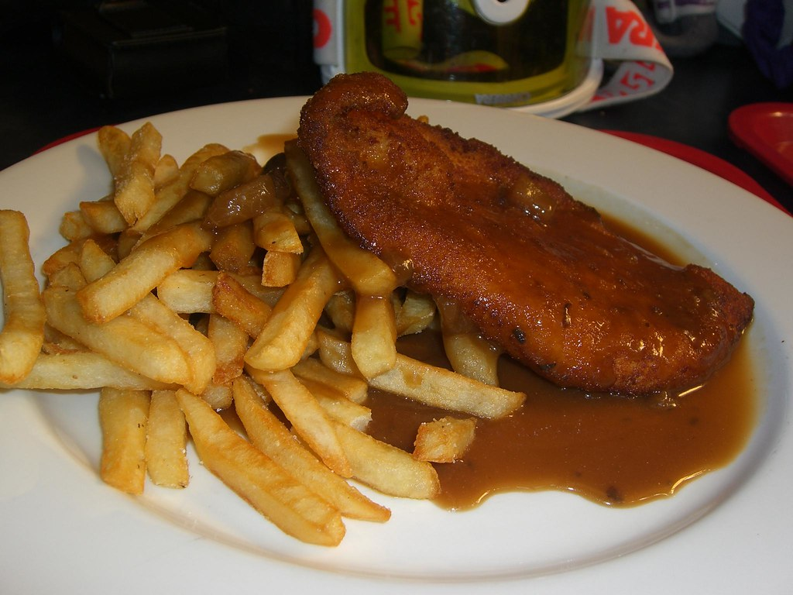

Home
Garlic-Butter Chicken

Ingredients:
- 250g Chicken Breast
- Fresh Thyme
- Garlic
- Butter
- Chicken Stock
- Salt & Pepper
Steps:
Prep Ingredients:
- Cut / Butterfly breast if need.
- Salt + Pepper both sides of chicken breast.
- Mince garlic
Cooking the meal:
- Cook breast in butter till golden brown on both sides.
- Remove breast from pan.
- Add quarter cup of chicken stock and using a wooden spoon scrape the fond off the bottom.
- Add butter, thyme and garlic.
- Add chicken back in and baste for a couple minutes.
- Place chicken atop of rice
- Optional: Thicken sauce with a cornstarch slurry. (2tsp cornstarch + 2tbps water)
- Pour sauce over plated chicken and serve.